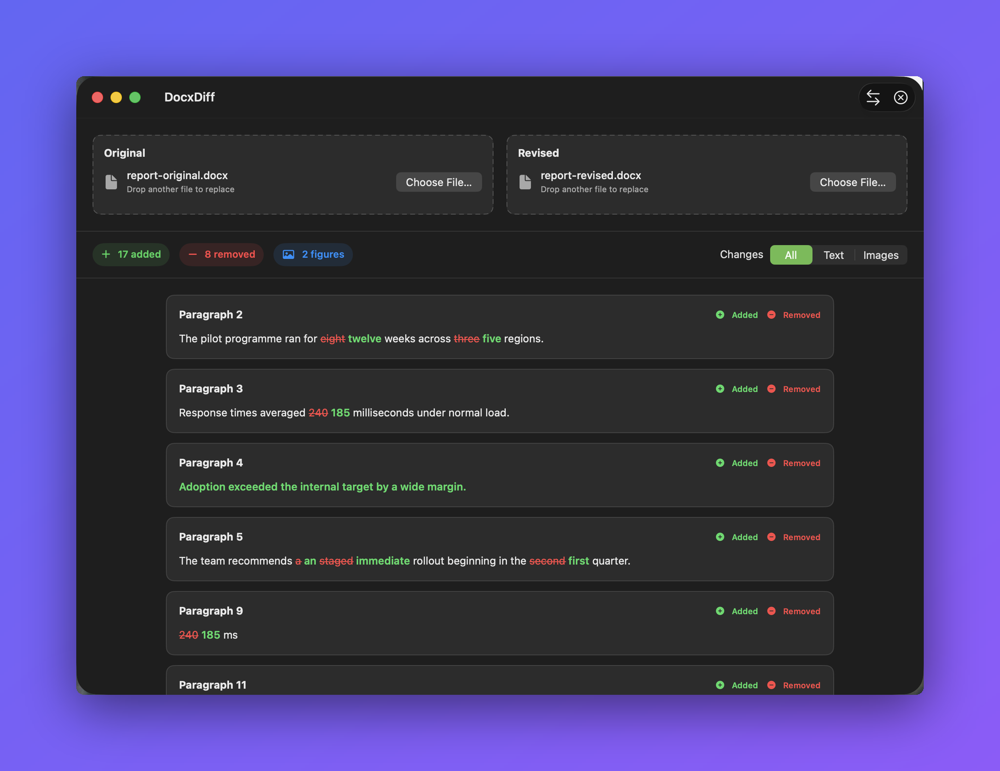
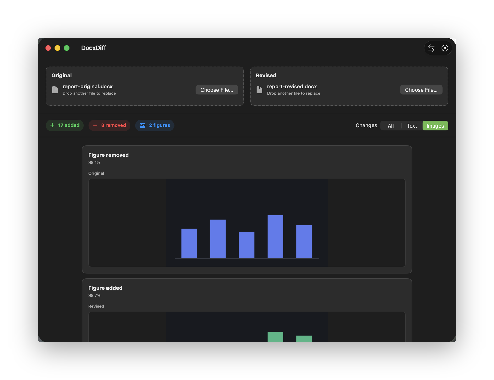
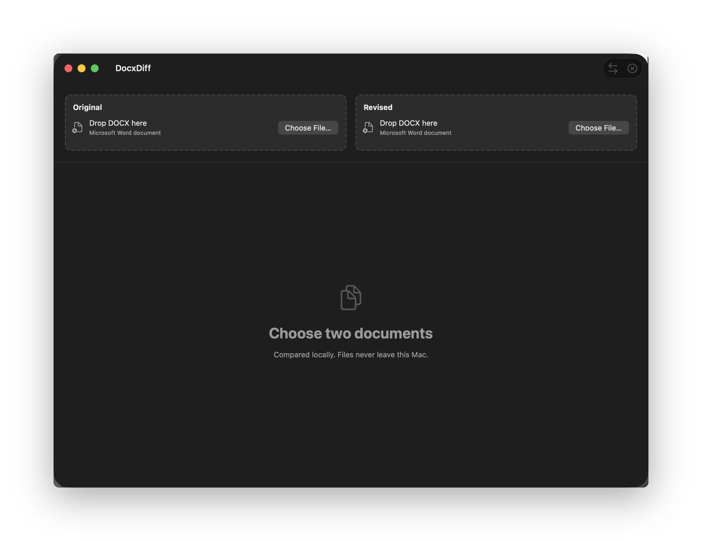

Compare two DOCX files on your Mac and see exactly which words and embedded images changed.
⬇︎ Download for macOSFree and open source. Requires macOS 14 or later.



Paragraphs and table cells align in document order. Removed words are struck through in red, added words show in green.
Figures added, removed, or replaced are reported. A replacement keeps the old and new preview side by side.
Drag a DOCX onto either slot or click to browse. Comparison starts on its own once both slots hold a valid document.
No uploads, no accounts, no database. Temporary extraction directories are deleted after every comparison.
DocxDiff isn't signed with an Apple Developer ID, so macOS blocks it the first time you open it. This is expected — you only need to do one of the following once, and it opens normally afterward.
DocxDiff, choose Open, then click Open again in the dialog.DocxDiff being blocked, and click Open Anyway. Confirm with
Open Anyway (and Touch ID or your password if asked)./usr/bin/xattr -dr com.apple.quarantine /Applications/DocxDiff.app/Applications.)